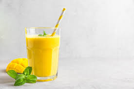

Mango Lassi

Mango Lassi is a popular lassi variety made with Indian yogurt (dahi/ curd), ripe sweet mangoes and cardamoms. A small amount of milk or fresh cream known as malai is also added for a creamy and rich feel. This also helps balance the sourness of the yogurt.
Ingredients
- 1 ½ cups mangos - peeled, seeded, chopped, and chilled
- 1 ½ cups plain yogurt
- ½ cup cold milk
- 2 tablespoons heavy cream
- 2 tablespoons confectioners' sugar
- ½ teaspoon ground cardamom
Steps
- Combine mangos, yogurt, milk, cream, confectioners' sugar, and cardamom in a blender; blend until smooth and frothy. Pour into glasses and serve immediately.